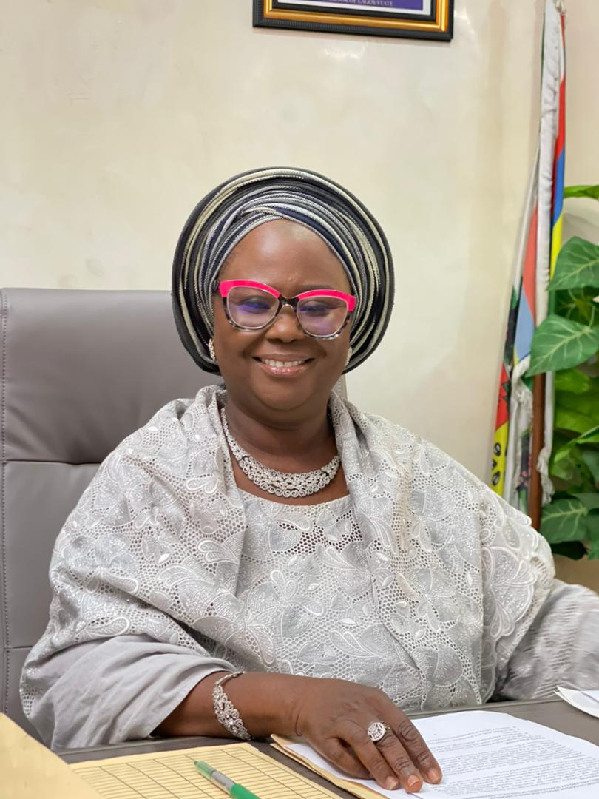

Education
Her academic journey provided the foundation for her professional growth, leadership and commitment to lifelong learning.
Discover the journey, values and vision behind the leadership committed to serving our community.

Hon. (Princess) Muhibat Rufai-Adeyemi is a proud daughter of the prestigious Rufai Royal Family of Ojo Town, Lagos State. A woman of purpose, pedigree and proven performance, she is a respected grassroots leader known for her unwavering dedication to public service and community development.
She holds a Diploma in Banking and Finance from the Institute of Management Technology, Lagos, a Bachelor of Science in Sociology and a Master’s Degree in Public Administration from Lagos State University (LASU).
Hon. Muhibat began her career in public service as an Audit Staff at Ojo Local Government (1999–2002) before proceeding to Adeniran Ogunsanya College of Education, Ijanikin, where she rose through the ranks to become an Assistant Registrar in Administration.
In 2011, she made history by becoming the second female legislator to represent Ojo Constituency I in the Lagos State House of Assembly (2011–2015). During her tenure, she distinguished herself as a passionate advocate for infrastructural development and impactful legislation. She:
* Moved a motion to ease traffic congestion along the Lagos–Badagry Expressway.
* Sponsored a motion urging the State Government to adopt and implement a new policy on power transmission. Both motions were successfully passed.
* Served as Vice Chairman, House Committee on Home Affairs, Culture and Tourism.
Hon. Muhibat Rufai-Adeyemi further etched her name in history by becoming the first-ever female Executive Chairman of Ojo Local Government, breaking a long-standing barrier and setting a new milestone for women’s leadership in the council.
Hon. Muhibat Rufai-Adeyemi is not just a politician; she is a compassionate leader who leads with integrity, impact and innovation. Her wealth of experience in governance and unwavering passion for community development continue to drive her vision of a more prosperous, inclusive and sustainable Ojo Local Government.
The experiences and opportunities that helped shape her leadership journey.
Her academic journey provided the foundation for her professional growth, leadership and commitment to lifelong learning.
Through various professional experiences, she developed valuable skills in leadership, administration and community engagement.
Her commitment to public service reflects her desire to improve lives and contribute meaningfully to community development.
To Make Ojo Local Government a model of excellence in local government across Nigeria distinguished by qualitative service delivery.
Transparent leadership and deep commitment to the wellbeing and empowerment of every resident."To deliver timely, efficient and people-centred public services that foster a health, vibrant and secure Ojo community driven by infrastructural development, investment in human capital and a strong commitment and a sttrong commitment to social welfare and economic growth."Write to the Chairman →